authors
- minichate
maintainers
- minichate
contributors
- minichate : 28 commits
- bcoca : 3 commits
- steynovich : 2 commits
- sgzijl : 1 commits
- boutetnico : 1 commits
- abadger : 1 commits
- Constantin07 : 1 commits
total issue counts
feature pull request: 1
docs report: 1
pullrequest: 7
docs pull request: 2
bugfix pull request: 3
issue: 6
new plugin: 1
bug report: 5
issue history
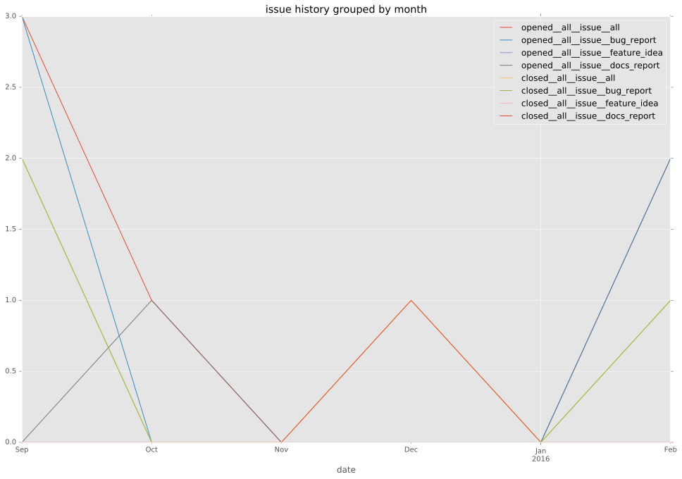
pullrequest history
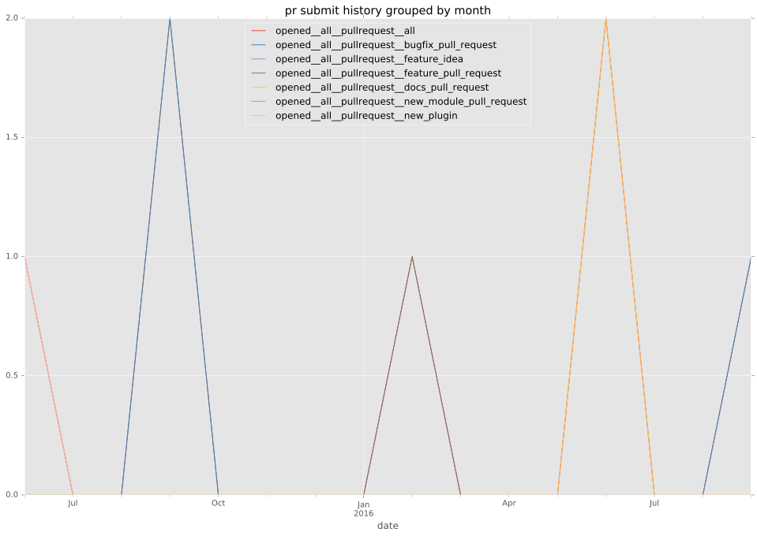
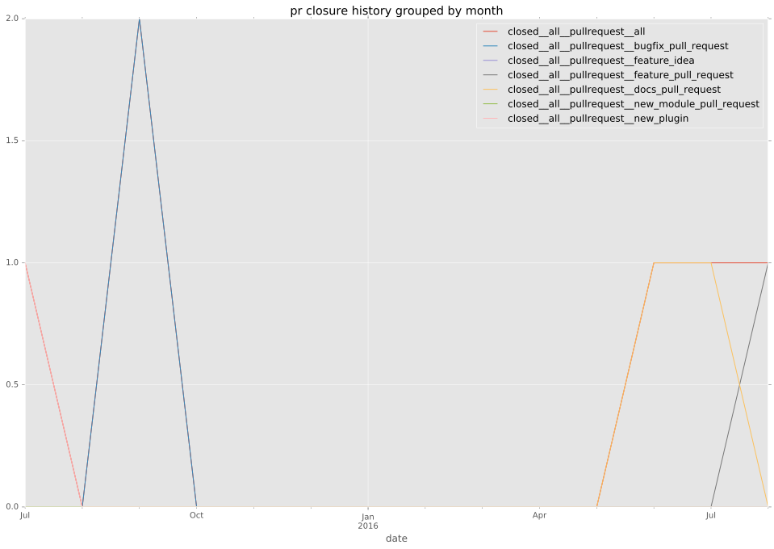
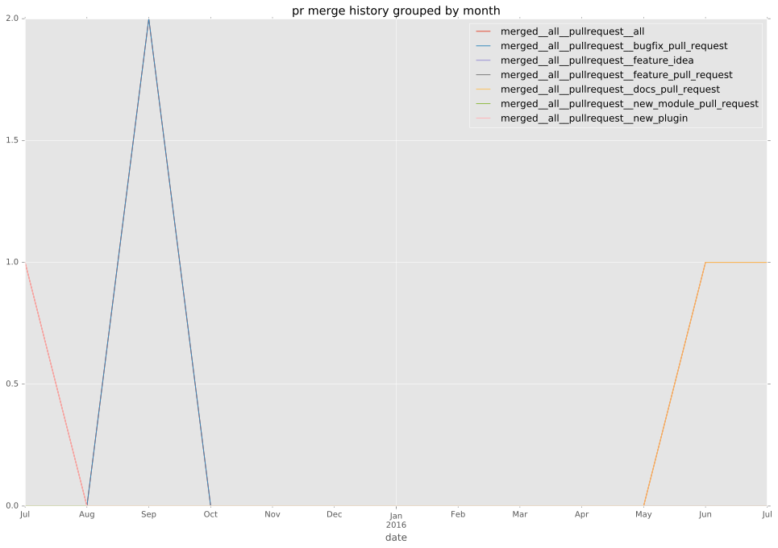
days open by issue type
bugfix pull request
count: 4
std: 10.3923048454
min: 1
max: 19
median: 10.0
mean: 10.0
all
count: 15
std: 47.7237087929
min: 0
max: 180
median: 1.0
mean: 23.4666666667
pullrequest
count: 0
std: nan
min: nan
max: nan
median: nan
mean: nan
docs pull request
count: 4
std: 0.0
min: 0
max: 0
median: 0.0
mean: 0.0
docs report
count: 1
std: nan
min: 78
max: 78
median: 78.0
mean: 78.0
feature pull request
count: 1
std: nan
min: 180
max: 180
median: 180.0
mean: 180.0
issue
count: 0
std: nan
min: nan
max: nan
median: nan
mean: nan
new plugin
count: 2
std: 0.0
min: 18
max: 18
median: 18.0
mean: 18.0
bug report
count: 3
std: 9.53939201417
min: 0
max: 17
median: 1.0
mean: 6.0
closures grouped by total days open
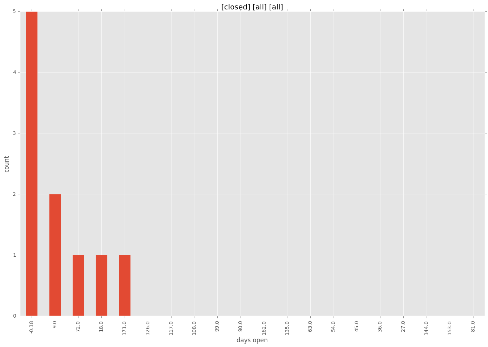
 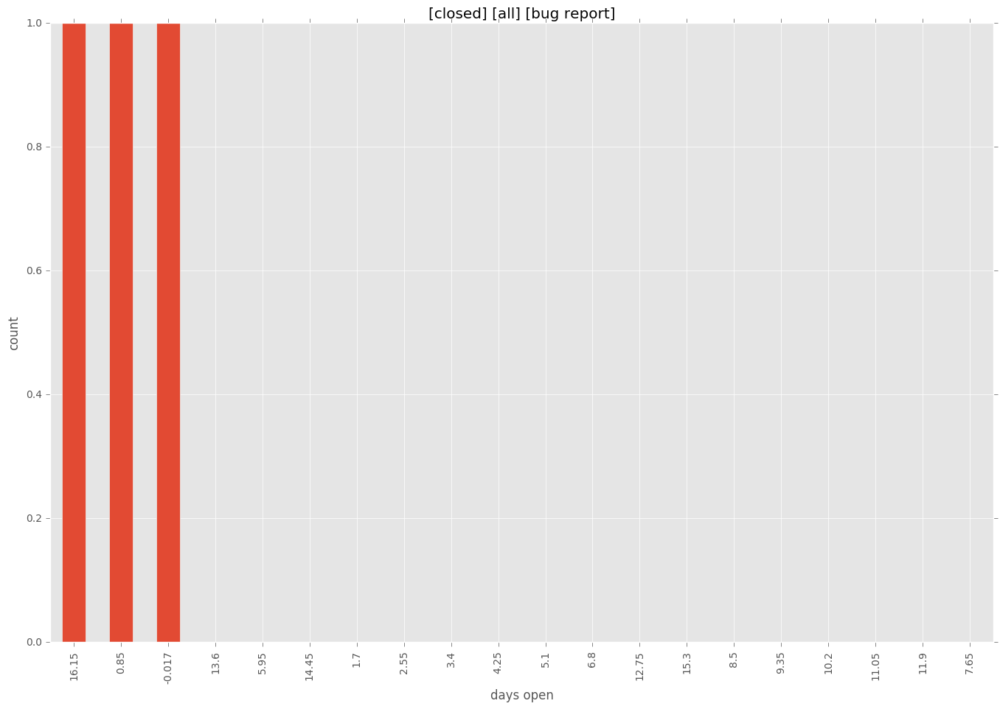
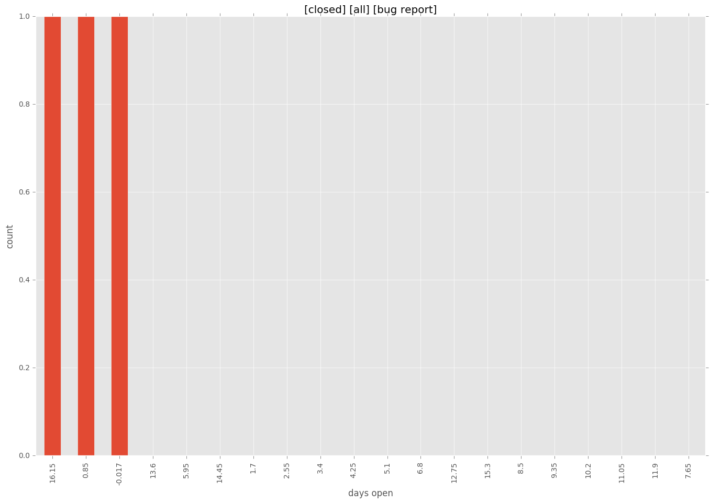

 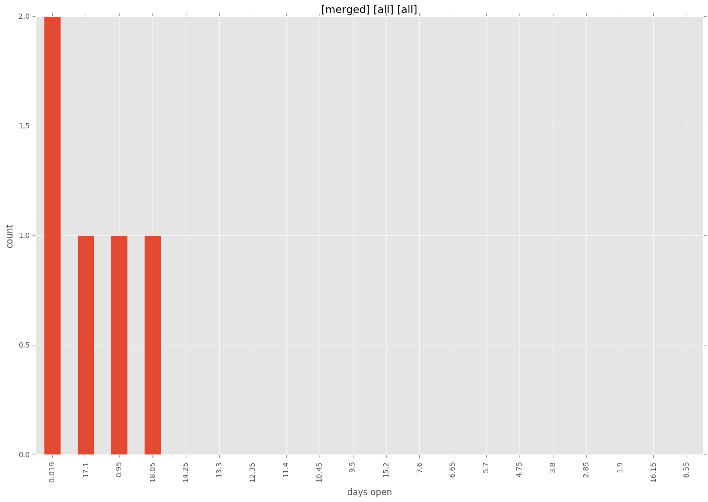
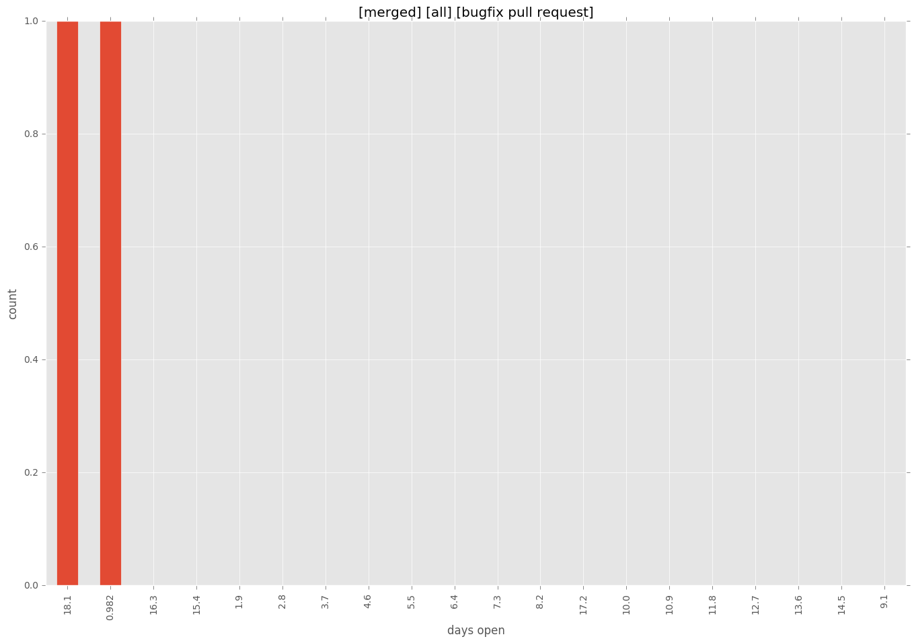
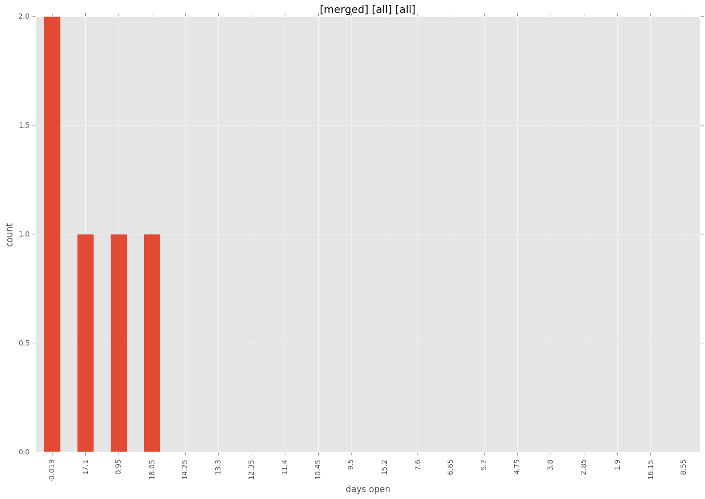
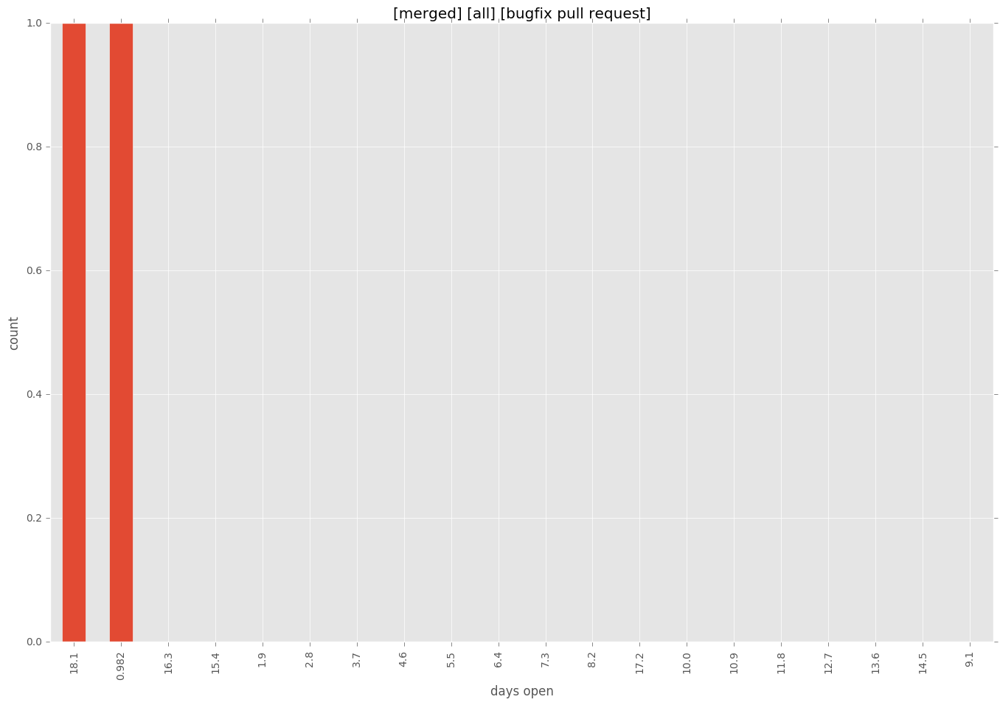